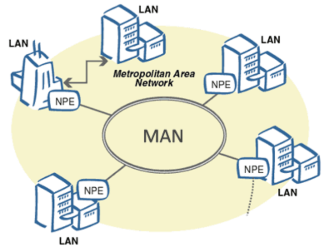

Networks are classified:
By size of the territory covered

Personal area network (PAN)
A personal network is a network built "around" a person.
These networks are designed to connect all the user's personal electronic devices (phones, pocket personal computers, smartphones, laptops, headsets, etc.).

Local Area Network (LAN)
A local area network (LAN) is a computer network that usually covers a relatively small area or a small group of buildings (a house, office, company, or Institute).

Campus Area Network (CAN)
Campus network (CAN) - combination of several local networks within a small geographical area (i.e. a variety of MAN)

Metropolitan area network (MAN)
MAN - Metropolitan Area Network covers several buildings within a single city or the entire city. It usually supports both data and voice transmission.